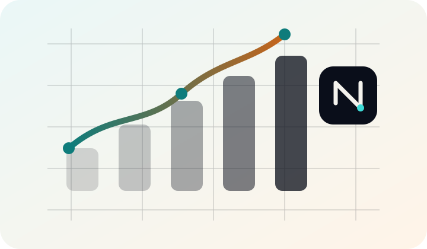

Drop any strategy into a live slot.
Design your own — or pick one of our four defaults. Our infrastructure books trades, manages stops, and closes positions for you. Run it on a paper account as long as you want. Connect a real broker only when the numbers convince you.

Your strategy. Our automation.
Plug your own logic — or one of our defaults — into a live slot, and our infrastructure runs the trade end-to-end. Picks come in, orders go out, stops track, positions close on schedule. Watch every fill, every signal, every drawdown — without typing an order.
Strategy → automation slot
Drop your own logic into one of four live slots — or pick a default (Momentum, Unsharp, Box, Pullback). Bots book entries, manage stops, close positions. Hot-swap any time.
Paper-first, risk-free
Every slot runs on a managed paper account. Real fills, real timestamps, zero capital risk — until you flip the switch.
Live stock picker
Ranked daily watchlists feed your slots automatically. Five-minute preview free; account unlocks all-day live.
Bring your own broker
Go live with Alpaca, eToro, or Interactive Brokers. Trades belong to your account — we never hold your funds.
Every signal, every fill, every drawdown.
The control panel surfaces what your slots are doing right now — and what they've done over the last day, week, month. Drag panels, resize cards, save your layout. Your view snaps back exactly the way you left it on every login.
NYUKD Invest is not a financial advisor. We provide infrastructure to make disciplined day-trading easier. Numbers shown reflect the behaviour of strategies running on paper accounts; live results vary. Please read T&Cs.
Start on paper. Go live when you're ready.
Four strategy slots — Momentum, Unsharp, Box, Pullback — running on paper accounts at Alpaca and eToro Demo. Performance, regime scoring, and the live stock picker are visible to everyone. Operator controls (start, stop, risk overrides, custom strategies) require an account. Connect your own broker on Premium when you want to go live.
- Public Performance dashboard · Stock Picker (first 5 minutes live) · Control Panel (read-only)
- Account 7-day live Stock Picker trial · Notifications · Personal filters and watchlists
- Operator Start / stop bots · Override risk parameters · Run recalibration and auto-tune
Paper trading only. Not investment advice. The dashboard reports the behaviour of NYUKD's own AI-led strategies — not personalised recommendations.